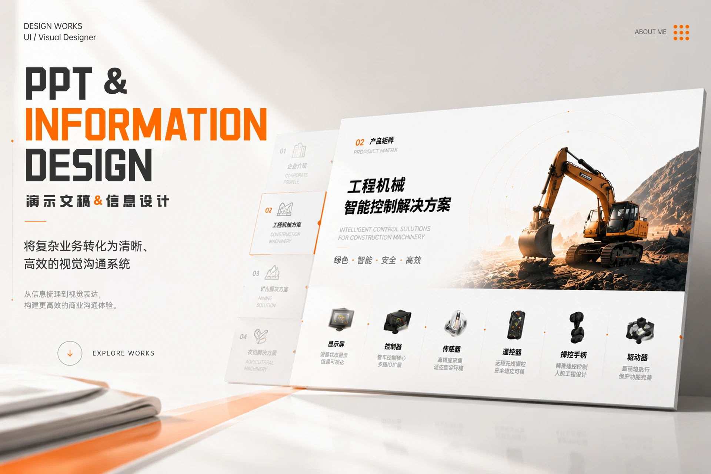
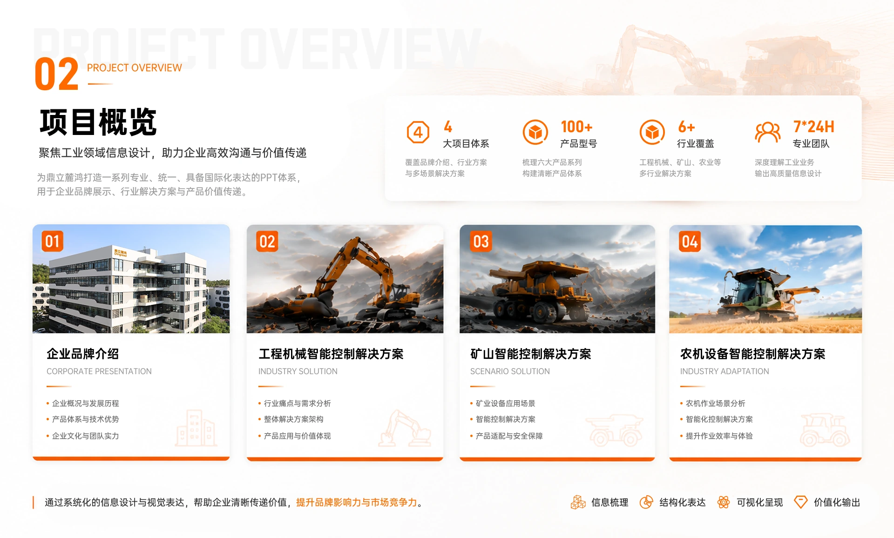
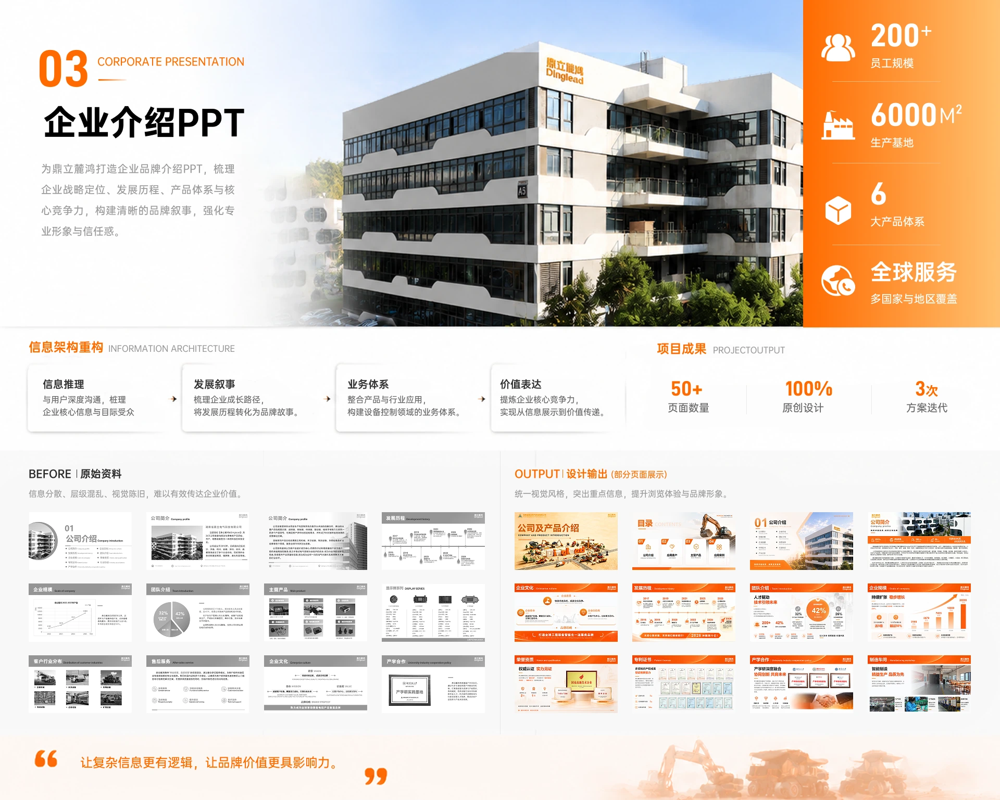
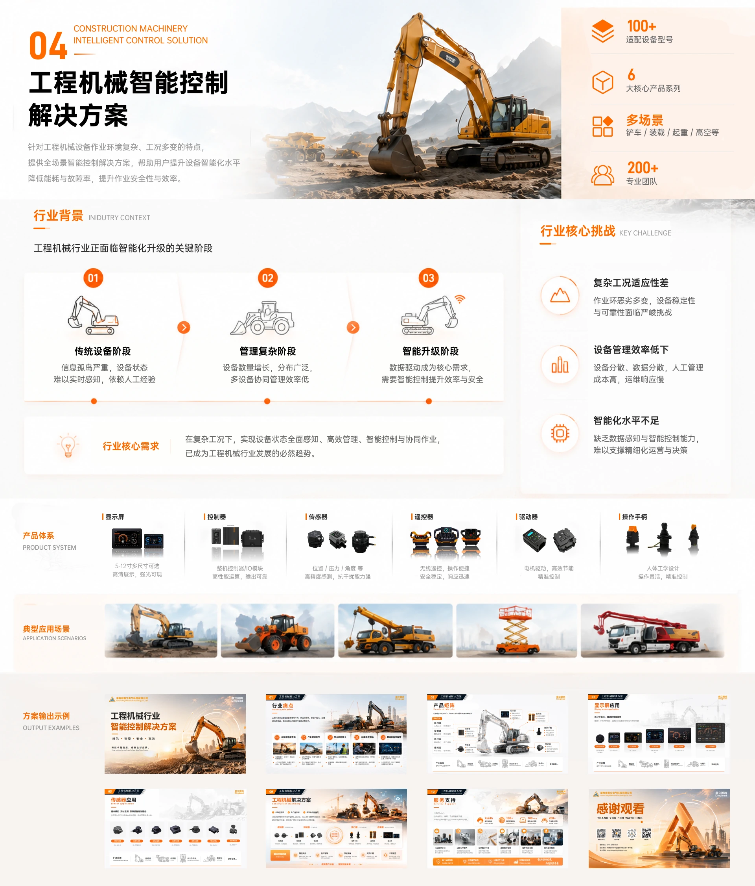
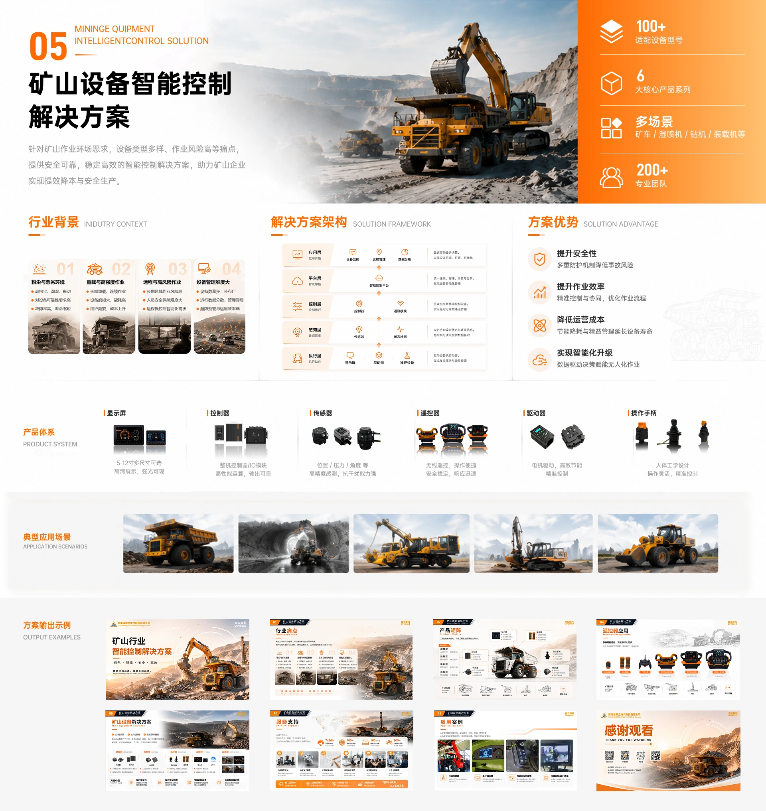
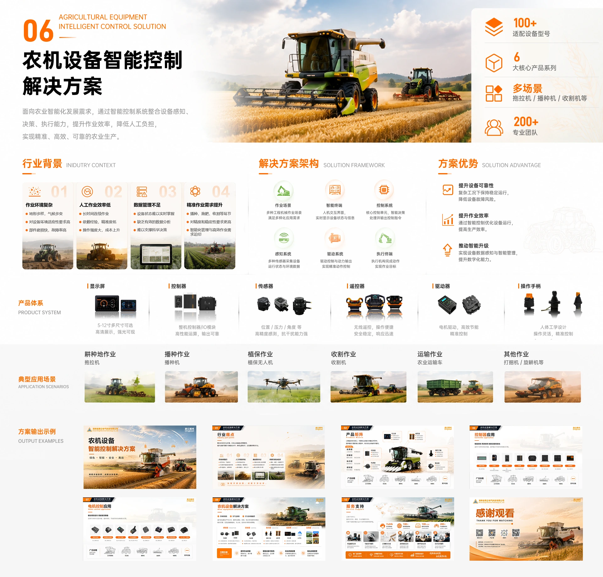
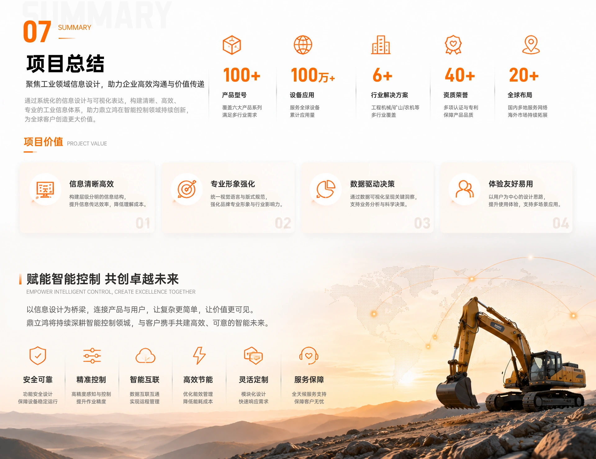

01 / HEROPPT 与
信息设计1920 x 1280 · ppt-info-design-01.webp

02 / BACKGROUND项目背景与
设计任务1920 x 1280 · ppt-info-design-02.webp

03 / INFORMATION ARCHITECTURE整体信息
架构1920 x 1280 · ppt-info-design-03.webp

04 / COMPANY PROFILE PPT企业介绍
PPT 精选1920 x 1280 · ppt-info-design-04.webp

05 / VISUAL SYSTEM视觉与信息
规范1920 x 1280 · ppt-info-design-05.webp

06 / SOLUTION SYSTEM行业解决
方案体系1920 x 1280 · ppt-info-design-06.webp

07 / INDUSTRY ADAPTATION三个行业的
差异化适配1920 x 1280 · ppt-info-design-07.webp

08 / SELECTED PAGES精选页面
展示1920 x 1280 · ppt-info-design-08.webp

09 / MORE PAGES更多精选
页面展示1920 x 1600 · ppt-info-design-09.webp

10 / SUMMARY项目
总结1920 x 1280 · ppt-info-design-10.webp